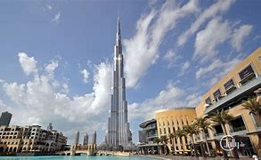

DUBAI TOURIST PLACES TO VISIT
|  | BURJ KHALIFA,DUBAI,UAE |
 |
BURJ-AL-ARAB,DUBAI,UAE1. Burj Al Arab Jumeirah – which stands at 321m – is 14m taller than the Eiffel Tower and only 60m shorter than the Empire State building. 2. it is the only one hotel in the world with 7 stars in world. 3. The shape of the structure is designed to mimic the sail of a ship. 4. it has world tallest tennis court on the roof of the hotel FOR MORE INFORMATION YOU CAN REFER TO ITS OFFICIAL WEBSITE |
 |
DUBAI MALL,DUBAI,UAE1. It is the largest mall in the world by total area at 1,124,000 square meters. In other words, it is equivalent to 50 football pitches! 2. There are 1200 stores open in Dubai Mall and that doesn’t include the pop up ones! 3. You can take a ride on a glass bottom boat to view over 33,000 aquatic animals and you could also go cage diving with sharks! 4. The Dubai Mall houses the world’s largest candy store: Candylicious and it spans over 10,000 feet! 5. The mall has a 250-room luxury hotel, 120 restaurants and a parking facility that houses 14,000 cars! FOR MORE INFORMATION YOU CAN REFER TO THIS PAGE |
 |
PALM JUMERAH,DUBAI,UAE1. The Palm Jumeirah is a manmade archipelago in Dubai2. It is located on the Jumeirah coastal area of the emirate of Dubai, in the United Arab Emirates. 3. One of the most amazing Palm Jumeirah facts is that close to 94 million cubic meters of sand and around 7 million tons of rock was used to build this architectural archipelago. FOR MORE INFORMATION YOU CAN REFER TO THIS PAGE |